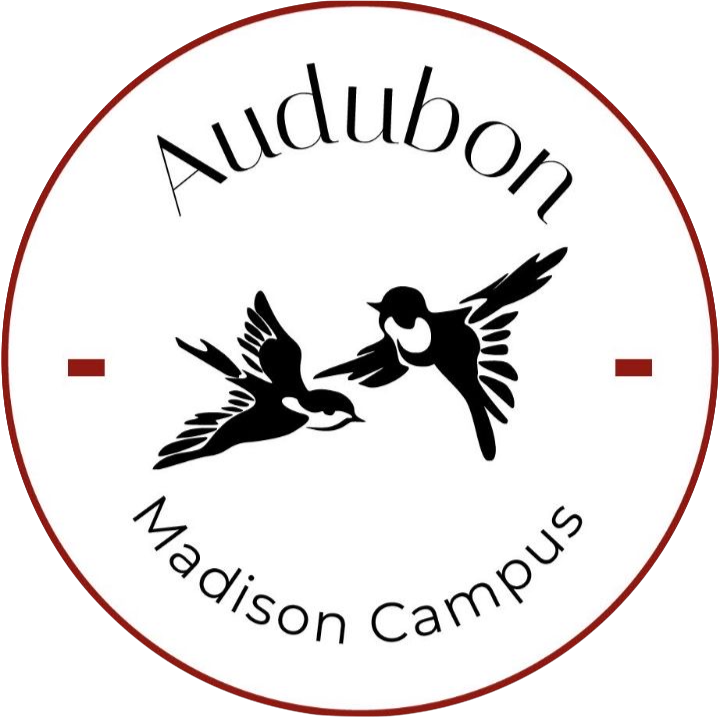
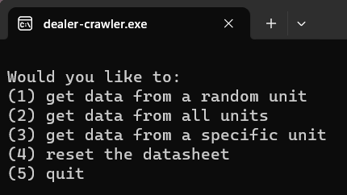

This tool automates deployment of writing posts for this website.
Lately, I've taken to doing some writing in my free time. I enjoy the iterative process of research, refining ideas, making them concrete, then critically reconsidering (see Purdue Global Writing Center's piece on "Writing to Think: Critical Thinking and the Writing Process"). I didn't want to have to manually update the website's source code each time I put something out (and I wanted to learn more about Python's built-in GUI framework tkinter), so I built a simple console app to automate the process. Using batch files and Python, it automatically updates the source code, commits and pushes changes to the GitHub repo, then deploys the changes to the GitHub Pages site. You can check out the source code at this website's repo (in the writing-automation directory) and can read some of my writing here.

Audubon Society at UW-Madison Website
This website serves as the homepage for the Audubon Society at UW-Madison.
As president of the Audubon Society at UW-Madison, I designed a website to serve as a home base for materials pertaining to ASUM. As needed, I manually update the webpage. This solution is admittedly not scalable, but it has gotten the job done for such a young organization. Building the site also made me far more confident in my HTML and CSS skills, however crude they were at the time. The website is currently active and can be found at audubonuw.org.

Wripli Crawler
This program is designed to streamline the testing process and improve decision-making as it relates to the user experience of Wripli.
At a previous job during my final year of high school, I was tasked with testing an IoT-integrated website and reporting my findings to a team of engineers and subject-matter experts. I found the testing process to be repetitive, so I took it upon myself to automate it! This console application (which I packaged and distributed using PyInstaller) was the first piece of software I ever developed, and the satisfaction I found reaffirmed my career path. Plus, the finished product automated a process that would have consumed several man-hours every week, completing the tasks in less than 5 minutes. The product is no longer being maintained, but I understand it to still be functional as of January 2024. You can view the GitHub repository here.